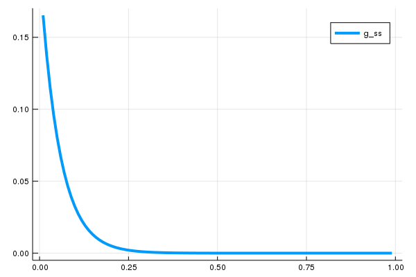

Solving HJBE with constant drifts
Consider solving for v from the following equation by the Hamilton-Jacobi-Bellman equation (HJBE):
for some constant $\rho, \sigma > 0$ and $\mu \leq 0$. To solve v under the reflecting barrier conditions $v'(0) = v'(1) = 0$ on M-size discretized grids, one can run the following code:
using LinearAlgebra, SimpleDifferentialOperators
# setup
π(x) = x^2
μ = -0.1 # constant negative drift
σ = 0.1
ρ = 0.05
M = 100 # size of grid (interior points)
x̄ = range(0.0, 1.0, length = (M+2))
x = interiornodes(x̄) # i.e., x̄[2:end-1]
# discretize L = ρ - μ D_x - σ^2 / 2 D_xx
# subject to reflecting barriers at 0 and 1
bc = (Reflecting(), Reflecting())
Lₓ = μ*L₁₋bc(x̄, bc) + σ^2 / 2 * L₂bc(x̄, bc)
L_bc = I * ρ - Lₓ
# solve the value function
v = L_bc \ π.(x)Note that the interior solution v does not the values of $v$ at the boundary, i.e., $v(0)$ and $v(1)$. To extend the interior solution to the boundary points, one can call extrapolatetoboundary as follows:
̄v = extrapolatetoboundary(x̄, v, bc);Here is a complete plot for v:
using Plots
plot(x̄, v̄, lw = 4, label = "v")Note that the code above uses differential operators on the interior nodes with reflecting boundary conditions applied. One can alternatively use operators on extended nodes (extended operators) and stack them with matrices for boundary conditions to compute v:
# import SparseArrays package (for identity matrix and spzeros)
using SparseArrays
# differential operators on extended nodes
Lₓ = μ*L₁₋(x̄) + σ^2 / 2 * L₂(x̄)
# boundary conditions (i.e. B v̄ = b)
B = transpose([[-1; 1; zeros(M)] [zeros(M); -1; 1]])
b = [0.0; 0.0]
# form bellman equation on extension
L = [spzeros(M) ρ*I spzeros(M)] - Lₓ
# stack the systems of bellman and boundary conditions, and solve
v̄ = [L; B] \ [π.(x); b]
# extract the interior (is identical with `v` above)
v = v̄[2:end-1]Solving HJBE with absorbing barrier conditions
Instead of having the reflecting barrier conditions on both lower bound and upper bound $v'(0) = v'(1) = 0$ as above, one can impose an absorbing barrier condition as well. To solve v under the reflecting barrier conditions $v(0) = S$ (absorbing barrier on lower bound) for some S and $v'(1) = 0$ (reflecting barrier on upper bound), one can construct B and b for the boundary conditions as follows.
First, consider the case where $S \neq 0$, which gives a nonhomogenous boundary condition:
# define S
S = 3.0
# boundary conditions (i.e. B v̄ = b)
B = transpose([[1; 0; zeros(M)] [zeros(M); -1; 1]])
b = [S; 0.0];We can then apply one Gaussian elimination step to remove a non-zero element of the first column in $L$, which is $\mu \Delta^{-1} - (\sigma^2/2) \Delta^{-2}$. This can be done by substracting the first row of the stacked system $[L; B]$ by the first row of the system $B = b$ by $\mu \Delta^{-1} - (\sigma^2/2) \Delta^{-2}$. This returns the following identical system:
where
Now solve v:
# stack the systems of bellman and boundary conditions, and solve
v̄ = [L; B] \ [π.(x); b]Here is a plot for v:
plot(x̄, v̄, lw = 4, label = "v")
Note that this can be alternatively done by constructing the corresponding differential operators on the interior with Absorbing() boundary condition when $S = 0$:
# discretize L = ρ - μ D_x - σ^2 / 2 D_xx
# subject to reflecting barriers at 0 and 1
bc = (Absorbing(), Reflecting())
Lₓ = μ*L₁₋bc(x̄, bc) + σ^2 / 2 * L₂bc(x̄ , bc)
L_bc = I * ρ - Lₓ
# solve the value function
v = L_bc \ π.(x)In fact, on the interior, they return identical solutions:
# define S
S = 0.0
# boundary conditions (i.e. B v̄ = b)
B = transpose([[1; 0; zeros(M)] [zeros(M); -1; 1]])
b = [S; 0.0];
# stack the systems of bellman and boundary conditions, and solve
v̄ = [L; B] \ [π.(x); b]
# confirm that v returns the identical solution as the one from the stacked system
using Test
@test v ≈ v̄[2:end-1]Solving HJBE with jump diffusion
Consider the jump process added to the HJBE with some intensity $\lambda \geq 0$:
where the jump process is defined by the jump magnitude defined by $J(x_i)$. In SimpleDifferentialOperators.jl, the jump process can be defined as follows:
# uniform jump
jumpf(x_i) = -0.01
jumpprocess = JumpProcess(x̄, jumpf)Note that, the corresponding indices for destinations will be determined by the nearest neighbor as the domain has to be discretized accordingly. Alternatively, if the jump magnitude is uniform across all cohorts, one can forward the uniform jump magnitude as follows:
# use the fact that the jump magnitude is uniform across all nodes
jumpprocess = JumpProcess(x̄, -0.01)One can define a jump process manually by providing jump magnitudes in indices as well. If a jump process is defined by the indices on a discretized domain, incurring jumps from $v(x_i)$ to $v(x_{i-1})$ for all $i$ in $2 \leq i \leq M$, one can construct a jump process as follows:
# length of nodes on the interior
M = length(interiornodes(x̄))
# vector of jumps; ith element represents the jump from ith node in the interior
jumps = -ones(M)
# define jump process
jumpprocess = JumpProcess(x̄, jumps)Alternatively, one can define an identical jump process with ease if the jump maginitude in index is uniform across all nodes:
# use the fact that the jump size is uniform across all nodes
jumpprocess = JumpProcess(x̄, -1)Then one can define the corresponding discretized operator $L_n$ and solve value functions as follows:
# define jump intensity
λ = 0.6
# construct discretized operators on interior nodes with the bc
Lₓ = μ*L₁₋bc(x̄, bc) + σ^2 / 2 * L₂bc(x̄ , bc) + λ * Lₙbc(x̄, bc, jumpprocess)
L_bc = I * ρ - Lₓ
# solve the value function
v = L_bc \ π.(x)Solving HJBE with jump diffusions and Markov chains
Suppose we are asked to solve HJBE with two states ($N=2$) where for each $i$th state with the corresponding differential operator $L_i$ under different payoff functions $\pi_i$ and drifts $\mu_i$, there is a transition intensity of $q_{ij}$ to have state $j$ assigned.
# setup
# payoff functions
π_1(x) = x^2
π_2(x) = (x-0.01)^2
# constant negative drifts
μ_1 = -0.1
μ_2 = -0.15
λ = 0.6
σ = 0.1
ρ = 0.05
M = 100 # size of grid (interior points)
x̄ = range(0.0, 1.0, length = (M+2))
x = interiornodes(x̄) # i.e., x̄[2:end-1]Let the HJBE in the first state have a jump process $J$ associated while the one for the second state does not. Then we have the following system of differential equations; note that we have $q_{ii} = -q_{ij}$ for $i \neq j$:
First, construct $L_1$ and $L_2$ ignoring the Markov chain for transition between the two states; assume that both states have reflecting boundary conditions applied.
# construct the jump process for the operator in state 1
jumpprocess1 = JumpProcess(x̄, -0.01)
# construct the differential operators for both states
# subject to reflecting barriers at 0 and 1
bc = (Reflecting(), Reflecting())
L_1ₓ = μ_1*L₁₋bc(x̄, bc) + σ^2 / 2 * L₂bc(x̄, bc) + λ * Lₙbc(x̄, bc, jumpprocess1)
L_2ₓ = μ_2*L₁₋bc(x̄, bc) + σ^2 / 2 * L₂bc(x̄, bc)
L_1_bc = I * ρ - L_1ₓ
L_2_bc = I * ρ - L_2ₓThen construct an intensity matrix $Q$, whose $(i,j)$th element represents $q_{ij}$:
# define intensity matrix for transition
Q = [-0.01 0.01; 0.02 -0.02]Using the discretized operators L_1_bc and L_2_bc on interior nodes x with boundary conditions bc applied, one can construct the joint operator L_bc with the intensity matrix Q as follows:
# define the corresponding joint operator
L_bc = jointoperator_bc((L_1_bc, L_2_bc), Q)Construct a vector of payoff functions $\pi_1$ and $\pi_2$ stacked together and solve the system using the joint operator constructed above:
# solve the system
v = L_bc \ [π_1.(x); π_2.(x)]Note that the first $M$ elements represent the discretized solution for $v_1$ and the last $M$ elements represent the one for $v_2$:
# extract the solution for each state
v_1 = v[1:M]
v_2 = v[(M+1):end]
# plot v_1 and v_2
plot(x, [v_1, v_2], lw = 4, label = ["v_1", "v_2"])Solving HJBE with state-dependent drifts
One can also deploy upwind schemes when drift variable is not constant. Consider solving for v from the following Bellman equation:
associated with the diffusion process
for some constant $\rho, \sigma > 0$ and $\mu(x) = -x$. Note that $\mu(x)$ depends on states. The following code will solve v using upwind schemes, with the reflecting barrier conditions $v'(0) = v'(1) = 0$ applied:
# setup
π(x) = x^2
μ(x) = -x # drift depends on state
σ = 1.0
ρ = 0.05
M = 100 # size of grid
x̄ = range(-1., 1., length = M + 2)
x = interiornodes(x̄) # i.e., x̄[2:end-1]
bc = (Reflecting(), Reflecting())
# Define first order differential operator using upwind scheme
L₁ = Diagonal(min.(μ.(x), 0.0)) * L₁₋bc(x̄, bc) + Diagonal(max.(μ.(x), 0.0)) * L₁₊bc(x̄, bc)
# Define linear operator using upwind schemes
Lₓ = L₁ - σ^2 / 2 * L₂bc(x̄, bc)
L_bc_state_dependent = I * ρ - Lₓ
# solve the value function
v = L_bc_state_dependent \ π.(x)Finding stationary distribution from the Kolmogorov forward equation (KFE)
The KFE equation is
for $x \in (x_{\min}, x_{\max})$ with the following corresponding reflecting barrier conditions:
i.e.,
which gives mixed boundary conditions with $\overline{\xi} = \underline{\xi} = -\frac{2\mu}{\sigma^2}$.
One can compute the stationary distribution of the state x above from the corresponding KFE by taking $\partial_{t} f(x,t) = 0$, i.e., solving $f$ from the $L^* f(x) = 0$ where
The following code constructs $L^*$:
# parameter setup
μ = -0.1 # constant negative drift
σ = 0.1
M = 100 # size of grid (interior points)
x_min = 0.0
x_max = 1.0
x̄ = range(x_min, x_max, length = (M+2))
# ξ values for mixed boundary conditions
ξ_lb = ξ_ub = -2μ/σ^2
# define the corresponding mixed boundary conditions
# note that the direction on the lower bound is backward (default is forward)
# as the drift μ is negative.
bc = (Mixed(ξ = ξ_lb, direction = :backward), Mixed(ξ = ξ_ub))
# use SimpleDifferentialOperators.jl to construct the operator on the interior
L_KFE = Array(-μ*L₁₊bc(x̄, bc) + σ^2 / 2 * L₂bc(x̄, bc))One can find the stationary distribution $f$ by solving the following discretized system of equations:
such that the sum of $f$ is one. This can be found by finding a non-trivial eigenvector f_ss for L_KFE associated with the eigenvalue of zero:
using Arpack # library for extracting eigenvalues and eigenvectors
# extract eigenvalues and eigenvectors, smallest eigenval in magintute first
λ, ϕ = eigs(L_KFE, which = :SM);
# extract the very first eigenvector (associated with the smallest eigenvalue)
f_ss = real.(ϕ[:,1]);
# normalize it
f_ss = f_ss / sum(f_ss)Using L from the state-dependent drift example above, this results in the following stationary distribution:
plot(x, f_ss, lw = 4, label = "f_ss")
Note that the operator for the KFE in the original equation is the adjoint of the operator for infinitesimal generator used in the HJBE, $L$, and the correct discretization scheme for $L^*$ is, analogously, done by taking the transpose of the discretized operator for HJBE, $L$ (See Gabaix et al., 2016 and Achdou et al., 2017), which has been constructed as Lₓ is the HJBE example above. In fact, the discretized $L^*$ and $L^T$ are identical:
# discretize L = μ D_x + σ^2 / 2 D_xx
# for infinitesimal generators used in the HJBE
# subject to reflecting barrier conditions
bc = (Reflecting(), Reflecting())
Lₓ = μ*L₁₋bc(x̄, bc) + σ^2 / 2 * L₂bc(x̄, bc)
@test transpose(Lₓ) == L_KFE